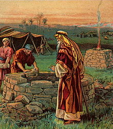

Isaac
| Isaac | |
|---|---|
|  Isaac digging for the wells, imagined in a Bible illustration (c. 1900) | |
| In-universe information | |
| Family | |
| Spouse | Rebecca |
| Children | |
Isaac[a] is one of the three patriarchs of the Israelites and is an important figure in the Abrahamic religions, including Judaism, Christianity, and Islam. He was the son of Abraham and Sarah, the father of Jacob, and the grandfather of the twelve tribes of Israel.
Isaac's name means "he will laugh", reflecting the laughter, in disbelief, of Abraham and Sarah, when told by God that they would have a child.[1][2] He is the only patriarch whose name was not changed, and the only one who did not move out of Canaan.[2] According to the narrative, he died aged 180, the longest-lived of the three patriarchs.[2]
Etymology[edit]
The anglicized name Isaac is a transliteration of the Hebrew term Yiṣḥāq (יִצְחָק) which literally means "He laughs/will laugh." Ugaritic texts dating from the 13th century BCE refer to the benevolent smile of the Canaanite deity El.[3] Genesis, however, ascribes the laughter to Isaac's parents, Abraham and Sarah, rather than El. According to the biblical narrative, Abraham fell on his face and laughed when God (Hebrew, Elohim) imparted the news of their son's eventual birth. He laughed because Sarah was past the age of childbearing; both she and Abraham were advanced in age. Later, when Sarah overheard three messengers of the Lord renew the promise, she laughed inwardly for the same reason. Sarah denied laughing when God questioned Abraham about it.[4][5][6]
In Amos, Isaac is spelled not with a צ but with a ש - Amos 7:9 ישחק.
Genesis narrative[edit]
Birth[edit]
It was prophesied to the patriarch Abraham that he would have a son and that his name should be Isaac. When Abraham became one hundred years old, this son was born to him by his first wife Sarah.[7] Though this was Abraham's second son[8] it was Sarah's first and only child.
On the eighth day from his birth, Isaac was circumcised, as was necessary for all males of Abraham's household, in order to be in compliance with Yahweh's covenant.[9]
After Isaac had been weaned, Sarah saw Ishmael mocking, and urged her husband to cast out Hagar the bondservant and her son, so that Isaac would be Abraham's sole heir. Abraham was hesitant, but at God's order he listened to his wife's request.[10]
Binding[edit]
At some point in Isaac's youth, his father Abraham took him to Mount Moriah. At God's command, Abraham was to build a sacrificial altar and sacrifice his son Isaac upon it. After he had bound his son to the altar and drawn his knife to kill him, at the very last moment an angel of God prevented Abraham from proceeding. Instead, he was directed to sacrifice a nearby ram that was stuck in thickets.
Family life[edit]
Before Isaac was 40 (Gen 25:20) Abraham sent Eliezer, his steward, into Mesopotamia to find a wife for Isaac, from his nephew Bethuel's family. Eliezer chose the Aramean Rebekah for Isaac. After many years of marriage to Isaac, Rebekah had still not given birth to a child and was believed to be barren. Isaac prayed for her and she conceived. Rebekah gave birth to twin boys, Esau and Jacob. Isaac was 60 years old when his two sons were born.[11] Isaac favored Esau, and Rebekah favored Jacob.[12]
The narratives about Isaac do not mention him having concubines.[13]
Migration[edit]
Isaac moved to Beer-lahai-roi after his father died.[14] When the land experienced famine, he removed to the Philistine land of Gerar where his father once lived. This land was still under the control of King Abimelech as it was in the days of Abraham. Like his father, Isaac also deceived Abimelech about his wife and also got into the well business. He had gone back to all of the wells that his father dug and saw that they were all stopped up with earth. The Philistines did this after Abraham died. So, Isaac unearthed them and began to dig for more wells all the way to Beersheba, where he made a pact with Abimelech, just like in the day of his father.[15]
Birthright[edit]
Isaac grew old and became blind. He called his son Esau and directed him to procure some venison for him, in order to receive Isaac's blessing. While Esau was hunting, Jacob, after listening to his mother's advice, deceived his blind father by misrepresenting himself as Esau and thereby obtained his father's blessing, such that Jacob became Isaac's primary heir and Esau was left in an inferior position. According to Genesis 25:29–34, Esau had previously sold his birthright to Jacob for "bread and stew of lentils". Thereafter, Isaac sent Jacob into Mesopotamia to take a wife of his mother's brother's house. After 20 years working for his uncle Laban, Jacob returned home. He reconciled with his twin brother Esau, then he and Esau buried their father, Isaac, in Hebron after he died at the age of 180.[16][17]
Family tree[edit]
| Terah | |||||||||||||||||||||||||||||||||||||||||||||||||||||||||
| Sarah[18] | Abraham | Hagar | Haran | ||||||||||||||||||||||||||||||||||||||||||||||||||||||
| Nahor | |||||||||||||||||||||||||||||||||||||||||||||||||||||||||
| Ishmael | Milcah | Lot | Iscah | ||||||||||||||||||||||||||||||||||||||||||||||||||||||
| Ishmaelites | 7 sons[19] | Bethuel | 1st daughter | 2nd daughter | |||||||||||||||||||||||||||||||||||||||||||||||||||||
| Isaac | Rebecca | Laban | Moabites | Ammonites | |||||||||||||||||||||||||||||||||||||||||||||||||||||
| Esau | Jacob | Rachel | |||||||||||||||||||||||||||||||||||||||||||||||||||||||
| Bilhah | |||||||||||||||||||||||||||||||||||||||||||||||||||||||||
| Edomites | Zilpah | ||||||||||||||||||||||||||||||||||||||||||||||||||||||||
| Leah | |||||||||||||||||||||||||||||||||||||||||||||||||||||||||
| 1. Reuben 2. Simeon 3. Levi 4. Judah 9. Issachar 10. Zebulun Dinah (daughter) | 7. Gad 8. Asher | 5. Dan 6. Naphtali | 11. Joseph 12. Benjamin | ||||||||||||||||||||||||||||||||||||||||||||||||||||||
Burial site[edit]
According to local tradition, the graves of Isaac and Rebekah, along with the graves of Abraham and Sarah and Jacob and Leah, are in the Cave of the Patriarchs.
Jewish views[edit]
In rabbinical tradition, the age of Isaac at the time of binding is taken to be 37, which contrasts with common portrayals of Isaac as a child.[20] The rabbis also thought that the reason for the death of Sarah was the news of the intended sacrifice of Isaac.[20] The sacrifice of Isaac is cited in appeals for the mercy of God in later Jewish traditions.[21] The post-biblical Jewish interpretations often elaborate the role of Isaac beyond the biblical description and primarily focus on Abraham's intended sacrifice of Isaac, called the aqedah ("binding").[3] According to a version of these interpretations, Isaac died in the sacrifice and was revived.[3] According to many accounts of Aggadah, unlike the Bible, it is Satan who is testing Isaac as an agent of God.[22] Isaac's willingness to follow God's command at the cost of his death has been a model for many Jews who preferred martyrdom to violation of the Jewish law.[20]
According to the Jewish tradition, Isaac instituted the afternoon prayer. This tradition is based on Genesis chapter 24, verse 63[23] ("Isaac went out to meditate in the field at the eventide").[20]
Isaac was the only patriarch who stayed in Canaan during his whole life and though once he tried to leave, God told him not to do so.[24] Rabbinic tradition gave the explanation that Isaac was almost sacrificed and anything dedicated as a sacrifice may not leave the Land of Israel.[20] Isaac was the oldest of the biblical patriarchs at the time of his death, and the only patriarch whose name was not changed.[3][25]
Rabbinic literature also linked Isaac's blindness in old age, as stated in the Bible, to the sacrificial binding: Isaac's eyes went blind because the tears of angels present at the time of his sacrifice fell on Isaac's eyes.[22]
Christian views[edit]
The early Christian church continued and developed the New Testament theme of Isaac as a type of Christ and the Church being both "the son of the promise" and the "father of the faithful". Tertullian draws a parallel between Isaac's bearing the wood for the sacrificial fire with Christ's carrying his cross.[26] and there was a general agreement that, while all the sacrifices of the Old Law were anticipations of that on Calvary, the sacrifice of Isaac was so "in a pre-eminent way".[27]
The Eastern Orthodox Church and the Roman Catholic Church consider Isaac as a saint along with other biblical patriarchs.[28] Along with those of other patriarchs and the Old Testament Righteous, his feast day is celebrated in the Eastern Orthodox Church and the Byzantine rite of the Catholic Church on the Second Sunday before Christmas (December 11–17), under the title the Sunday of the Forefathers.[29][30]
New Testament[edit]
The New Testament states Isaac was "offered up" by his father Abraham, and that Isaac blessed his sons.[25] Paul contrasted Isaac, symbolizing Christian liberty, with the rejected older son Ishmael, symbolizing slavery;[3][31] Hagar is associated with the Sinai covenant, while Sarah is associated with the covenant of grace, into which her son Isaac enters. The Epistle of James chapter 2, verses 21–24,[32] states that the sacrifice of Isaac shows that justification (in the Johannine sense) requires both faith and works.[33]
In the Epistle to the Hebrews, Abraham's willingness to follow God's command to sacrifice Isaac is used as an example of faith as is Isaac's action in blessing Jacob and Esau with reference to the future promised by God to Abraham[34] In verse 19, the author views the release of Isaac from sacrifice as analogous to the resurrection of Jesus, the idea of the sacrifice of Isaac being a prefigure of the sacrifice of Jesus on the cross.[35]
Islamic views[edit]

{kind=link}
{kind=link}
{kind=link}
{kind=link}
{kind=link}
{kind=link}
Islam considers Isaac a prophet of Islam, and describes him as the father of the Israelites and a righteous servant of God.
Isaac, along with Ishmael, is highly important for Muslims for continuing to preach the message of monotheism after his father Abraham. Among Isaac's children was the follow-up Israelite patriarch Jacob, who too is venerated an Islamic prophet.
Isaac is mentioned fifteen times by name in the Quran, often with his father and his son, Jacob.[36] The Quran states that Abraham received "good tidings of Isaac, a prophet, of the righteous", and that God blessed them both (37: 112). In a fuller description, when angels came to Abraham to tell him of the future punishment to be imposed on Sodom and Gomorrah, his wife, Sarah, "laughed, and We gave her good tidings of Isaac, and after Isaac of (a grandson) Jacob" (11: 71–74); and it is further explained that this event will take place despite Abraham and Sarah's old age. Several verses speak of Isaac as a "gift" to Abraham (6: 84; 14: 49–50), and 24: 26–27 adds that God made "prophethood and the Book to be among his offspring", which has been interpreted to refer to Abraham's two prophetic sons, his prophetic grandson Jacob, and his prophetic great-grandson Joseph. In the Qur'an, it later narrates that Abraham also praised God for giving him Ishmael and Isaac in his old age (14: 39–41).
Elsewhere in the Quran, Isaac is mentioned in lists: Joseph follows the religion of his forefathers Abraham, Isaac and Jacob (12: 38) and speaks of God's favor to them (12: 6); Jacob's sons all testify their faith and promise to worship the God that their forefathers, "Abraham, Ishmael and Isaac", worshiped (2: 127); and the Qur'an commands Muslims to believe in the revelations that were given to "Abraham, Ishmael, Isaac, Jacob and the Patriarchs" (2: 136; 3: 84). In the Quran's narrative of Abraham's near-sacrifice of his son (37: 102), the name of the son is not mentioned and debate has continued over the son's identity, though many feel that the identity is the least important element in a story which is given to show the courage that one develops through faith.[37]
Quran[edit]
The Quran mentions Isaac as a prophet and a righteous man of God. Isaac and Jacob are mentioned as being bestowed upon Abraham as gifts of God, who then worshipped God only and were righteous leaders in the way of God:
And We bestowed on him Isaac and, as an additional gift, (a grandson), Jacob, and We made righteous men of every one (of them).
And We made them leaders, guiding (men) by Our Command, and We sent them inspiration to do good deeds, to establish regular prayers, and to practise regular charity; and they constantly served Us (and Us only).
And WE gave him the glad tidings of Isaac, a Prophet, and one of the righteous.
Academic[edit]
Some scholars have described Isaac as "a legendary figure" or "as a figure representing tribal history, or "as a seminomadic leader."[40] The stories of Isaac, like other patriarchal stories of Genesis, are generally believed to have "their origin in folk memories and oral traditions of the early Hebrew pastoralist experience."[41] The Cambridge Companion to the Bible makes the following comment on the biblical stories of the patriarchs:
Yet for all that these stories maintain a distance between their world and that of their time of literary growth and composition, they reflect the political realities of the later periods. Many of the narratives deal with the relationship between the ancestors and peoples who were part of Israel's political world at the time the stories began to be written down (eighth century B.C.E.). Lot is the ancestor of the Transjordanian peoples of Ammon and Moab, and Ishmael personifies the nomadic peoples known to have inhabited north Arabia, although located in the Old Testament in the Negev. Esau personifies Edom (36:1), and Laban represents the Aramean states to Israel's north. A persistent theme is that of difference between the ancestors and the indigenous Canaanites… In fact, the theme of the differences between Judah and Israel, as personified by the ancestors, and the neighboring peoples of the time of the monarchy is pressed effectively into theological service to articulate the choosing by God of Judah and Israel to bring blessing to all peoples."[42]
According to Martin Noth, a scholar of the Hebrew Bible, the narratives of Isaac date back to an older cultural stage than that of the West-Jordanian Jacob.[40] At that era, the Israelite tribes were not yet sedentary. In the course of looking for grazing areas, they had come in contact in southern Philistia with the inhabitants of the settled countryside.[40] The biblical historian A. Jopsen believes in the connection between the Isaac traditions and the north, and in support of this theory adduces Amos 7:9 ("the high places of Isaac").[40]
Albrecht Alt and Martin Noth hold that, "The figure of Isaac was enhanced when the theme of promise, previously bound to the cults of the 'God the Fathers' was incorporated into the Israelite creed during the southern-Palestinian stage of the growth of the Pentateuch tradition."[40] According to Martin Noth, at the Southern Palestinian stage of the growth of the Pentateuch tradition, Isaac became established as one of the biblical patriarchs, but his traditions were receded in the favor of Abraham.[40]
In art[edit]
The earliest Christian portrayal of Isaac is found in the Roman catacomb frescoes.[43] Excluding the fragments, Alison Moore Smith classifies these artistic works in three categories:
Abraham leads Isaac towards the altar; or Isaac approaches with the bundle of sticks, Abraham having preceded him to the place of offering .... Abraham is upon a pedestal and Isaac stands near at hand, both figures in orant attitude .... Abraham is shown about to sacrifice Isaac while the latter stands or kneels on the ground beside the altar. Sometimes Abraham grasps Isaac by the hair. Occasionally the ram is added to the scene and in the later paintings the Hand of God emerges from above.[43]
See also[edit]
- Biblical narratives and the Qur'an
- Testament of Isaac
- Wife–sister narratives in the Book of Genesis – three such narratives involving Abraham (two) and Isaac (one)
Notes[edit]
Citations[edit]
- ^ Genesis 17:15–19 18:10–15
- ^ a b c deClaise-Walford 2000, p. 647.
- ^ a b c d e Encyclopedia of Religion, Isaac.
- ^ Genesis 17:15–19 18:10–15
- ^ Singer, Isidore; Broydé, Isaac (1901–1906). "Isaac". In Singer, Isidore; Adler, Cyrus; et al. (eds.). Jewish Encyclopedia. New York: Funk & Wagnalls.
- ^ Hirsch, Emil G.; Bacher, Wilhelm; Lauterbach, Jacob Zallel; Jacobs, Joseph; Montgomery, Mary W. (1901–1906). "Sarah (Sarai)". In Singer, Isidore; Adler, Cyrus; et al. (eds.). Jewish Encyclopedia. New York: Funk & Wagnalls.
- ^ Genesis 18:10–12
- ^ Genesis 16:15
- ^ Genesis 21:1–5
- ^ Genesis 21:8–12
- ^ Genesis 25:26
- ^ Genesis 25:20–28
- ^ Encyclopaedia Judaica, Volume 10, p. 34.
- ^ Genesis 25:11
- ^ Genesis 26
- ^ Jewish Encyclopedia, Isaac.
- ^ Genesis 35:28–29
- ^ Genesis 20:12: Sarah was the half–sister of Abraham.
- ^ Genesis 22:21-22: Uz, Buz, Kemuel, Chesed, Hazo, Pildash, and Jidlaph
- ^ a b c d e The New Encyclopedia of Judaism, Isaac.
- ^ Encyclopædia Britannica, Isaac.
- ^ a b Brock, Sebastian P., Brill's New Pauly, Isaac.
- ^ Genesis 24:63
- ^ Genesis 26:2
- ^ a b Easton, M. G., Illustrated Bible Dictionary, 3rd ed., Isaac.
- ^ Cross and Livingstone, Oxford Dictionary of the Christian Church, 1974, art Isaac
- ^ Kelly, J.N.D. Early Christian Doctrines, A & C Black, 1965. p. 72
- ^ The patriarchs, prophets and certain other Old Testament figures have been and always will be honored as saints in all the Church's liturgical traditions. – Catechism of the Catholic Church 61
- ^ "Sunday of the Forefathers - OrthodoxWiki".
- ^ Liturgy > Liturgical year >The Christmas Fast – Byzantine Catholic Archeparchy of Pittsburgh
- ^ Galatians 4:21–31
- ^ James 2:21–24
- ^ Encyclopedia of Christianity, Bowden, John, ed., Isaac.
- ^ Hebrews 11:17–20
- ^ see F.F. Bruce, The Epistle to the Hebrews Marshall. Morgan and Scott, 1964 pp. 308–13 for all this paragraph.
- ^ Watt, W. Montgomery. "Isaac". Encyclopedia of Islam. Brill.
- ^ Glasse, C. (1991). "Isaac". Concise Encyclopedia of Islam. HarperSanFrancisco. p. 472. ISBN 9780060631260.
- ^ Quran 21:72
- ^ Quran 37:112
- ^ a b c d e f Fahlbusch, Erwin; Lochman, Jan Milic; Bromiley, Geoffrey William; Barrett, David B.; Mbiti, John (2005). "Isaac". Encyclopedia of Christianity. Eerdmans. p. 744. ISBN 9780802824165.
- ^ "Isaac". Columbia Encyclopedia (6th ed.). Columbia University Press. 1935. pp. 3, 200.
- ^ Lumby, Joseph Rawson (1893). Chilton, Bruce; Kee, Howard Clark; Meyers, Eric M.; Rogerson, John; Levine, Amy-Jill; Saldarini, Anthony J. (eds.). The Cambridge Companion to the Bible: Containing the Structure, Growth and ... Cambridge University Press. p. 59. doi:10.1017/CBO9781139167376. ISBN 9781139167376.
- ^ a b Smith, Alison Moore (1922). "The Iconography of the Sacrifice of Isaac in Early Christian Art". American Journal of Archaeology. 26 (2): 159–73. doi:10.2307/497708. JSTOR 497708.
References[edit]
- Browning, W.R.F (1996). A Dictionary of the Bible. Oxford University Press. ISBN 978-0-19-211691-8.
- Paul Lagasse; Lora Goldman; Archie Hobson; Susan R. Norton, eds. (2000). The Columbia Encyclopedia (6th ed.). Gale Group. ISBN 978-1-59339-236-9. Missing or empty
|title=(help) - P.J. Bearman; Th. Bianquis; C.E. Bosworth; E. van Donzel; W.P. Heinrichs (eds.). Encyclopaedia of Islam Online. Brill Academic Publishers. ISSN 1573-3912. Missing or empty
|title=(help) - Erwin Fahlbusch; William Geoffrey Bromiley, eds. (2001). "The Encyclopedia of Christianity". Encyclopedia of Christianity (1st ed.). Eerdmans Publishing Company, and Brill. ISBN 978-0-8028-2414-1.
- John Bowden, ed. (2005). "Encyclopedia of Christianity". Encyclopedia of Christianity (1st ed.). Oxford University Press. ISBN 978-0-19-522393-4.
- The New Encyclopædia Britannica. Encyclopædia Britannica, Incorporated; Rev Ed edition. 2005. ISBN 978-1-59339-236-9. Missing or empty
|title=(help) - Jane Dammen McAuliffe, ed. (2005). "Encyclopaedia of the Qurʼān". Encyclopedia of the Qur'an. Brill Academic Publishers. ISBN 978-90-04-12356-4.
- Geoffrey Wigoder, ed. (2002). "The New Encyc of Judaism CREDO SALES ONLY". The New Encyclopedia of Judaism (2nd ed.). New York University Press. ISBN 978-0-8147-9388-6.
- Lindsay Jones, ed. (2005). Encyclopedia of Religion (2nd ed.). MacMillan Reference Books. ISBN 978-0-02-865733-2 https://archive.org/details/encyclopediaofre0000unse_v8f2. Missing or empty
|title=(help) - deClaise-Walford, Nancy (2000). "Isaac". In David Noel Freedman; Allen C. Myers; Astrid B. Beck (eds.). Eerdmans Dictionary of the Bible. Eerdmans Dictionary of the Bible. Wm. B. Eerdmans. ISBN 978-0-8028-2400-4.CS1 maint: ref=harv (link)
External links[edit]
| Wikimedia Commons has media related to Isaac (Biblical figure). |
- Isaac in Jewish Encyclopedia
- Abraham's son as the intended sacrifice (Al-Dhabih, Qur'an 37:99, Qur'an 37:99–113): Issues in qur'anic exegesis, journal of Semitic Studies XXX1V/ Spring 1989
- Herbermann, Charles, ed. (1913). . Catholic Encyclopedia. New York: Robert Appleton Company.
- Chisholm, Hugh, ed. (1911). . Encyclopædia Britannica (11th ed.). Cambridge University Press.